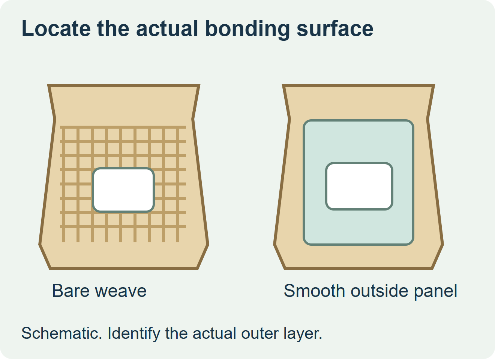
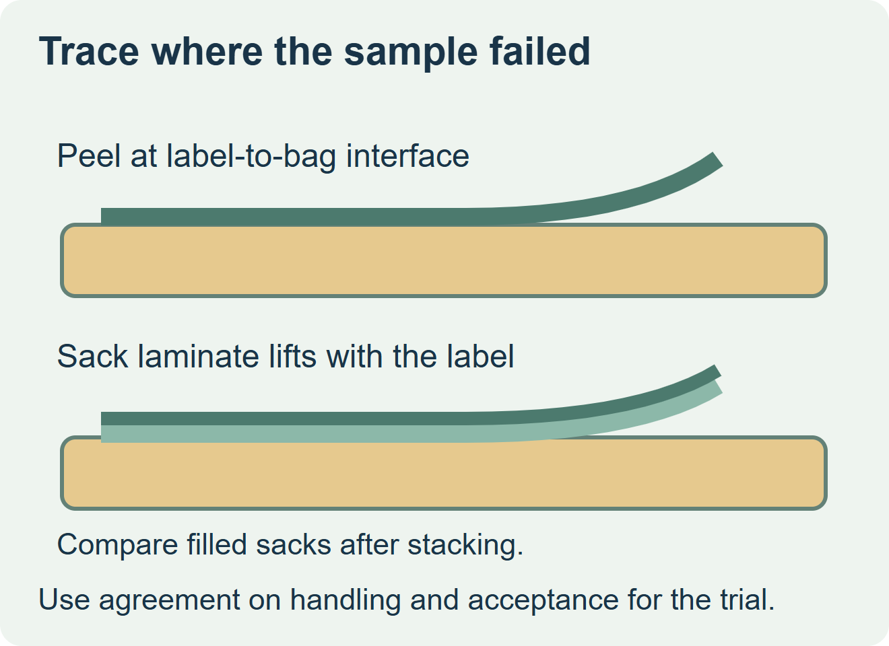

Use the bare woven surface when the proposed label is readable and stays attached on filled production bags through the intended handling route. Specify a smooth laminated landing when the bare weave fails the trial and the actual laminated sack provides a more reliable surface. Verify that landing before agreeing to a larger purchase of either labels or sacks.


Identify the outside layer on the bag drawing
Woven polypropylene describes the body of the sack. The outside at the label position could be bare woven tapes, an exposed film, or a printed or coated exterior on top of a laminate. An internal liner is a different part of the package. Ask the sack supplier to identify the exposed layer and where seams, stitching, print or folds interrupt it. Woven-bag suppliers document plain, laminated and liner options for food sacks. Güler woven sack examples and Sparsh Packaging woven sack constructions
The exposed texture matters at application. Check where the face actually contacts the label and compare edge condition after the filled bag settles. A flat loose sheet of filament or film can help identify a surface. Use the real filled bag to judge the conditions in which the adhesive has to work.
| Observation on filled sacks | Decision to quote |
|---|---|
| Current woven panel retains the label through handling | Keep the identified sack and label construction within the tested surface and route. |
| Label edges move at the weave or chafe at a fold | Test a position away from the stressed area and compare a defined smooth outside panel. |
| A smooth outside sample passes but the label is applied over printed or coated sack artwork | Confirm the actual printed or coated surface using a production-like bag before release. |
| Failure includes separation of the sack laminate | Review the bag construction with its supplier before changing the label adhesive. |


Check the filled bag after its real movements
Compare candidates on sacks filled and closed in the operation’s normal way. Use the anticipated grade and lot field lengths. Observe the applied footprint after the sack settles, and again after stacking and receiving. Mark whether the adhesive lifts from the outside, the face tears or the bag surface comes away. Keep flour dust and label timing consistent across comparison samples.
For a hypothetical mill, the sack supplier offers a laminated outside for one grade but supplies bare weave for another. Even if the label art is identical, ask whether both surfaces are approved. Where the smooth panel is needed, record its position relative to the closure seam on the bag drawing. Include a sack change and any added minimum or print cost in the same quotation.
Name the accepted outside surface on the order
Retain the bag item, exposed finish and photos of the approved position at packing and receiving. Keep bulk-bag construction and contact approval with the packaging owner. Ask separately which label construction is available for that outside surface.
Discuss the unresolved label requirement
Send filled bags from each actual construction, the outside layer and treatment, marked label location, application sequence, expected stack contact and quantities. Review food label options and prepare a label specification inquiry. The contact page opens an email draft and lists email or WhatsApp for attachments. Supply, proof options, testing, pricing and timing require project confirmation.